Created: 29/04/2021 | Last Update: 06/05/2021
Now you have access to the resources, what's next?
Now we have access we can start working for Añañau. For that, you need some programs to work efficiently. We strongly recommend using the advised editors because this will make your life much easier with much needed extensions.
If you have successfully finished the previous guide, you should have access to the Github repo's of Añañau. Clone them locally to a desired place within your computer. For the purpose of this tutorial i created a new map called ananau-tutorial.
DESKTOP /ananau-tutorial
$ git clone https://github.com/ananauPeru/ananau-bibliotheek-angular.git
$ git clone https://github.com/ananauPeru/ananau-bibliotheek-api.git
If everything went correctly you should now have two directories.
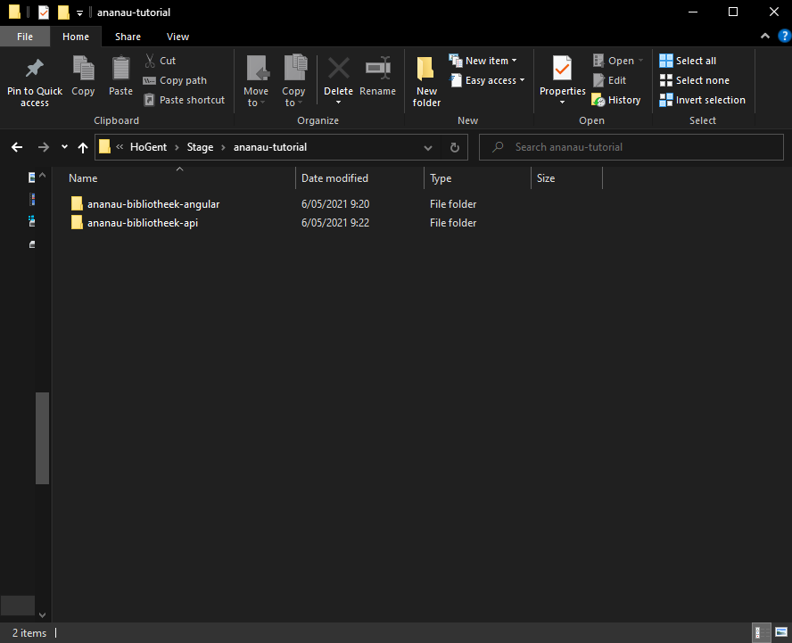For the frontend we use Visual Studio Code, for the backend we use Visual Studio 2019 and for DB Management we use MySQL Workbench. The frontend is written in Angular 11.0.9 and for the backend we use .NET Core 5.0.3
So next, you need to install:
After you've installed all the mentioned software, let's open our frontend in vscode and run the following command within our directory (this can take a while, be patient):
DESKTOP /ananau-tutorial/ananau-bibliotheek-frontend
$ npm install
This installs all the necessary packages for the project, this step should complete without any errors. If you do get errors, please solve them and run it again until it finishes. The result should look something like this:
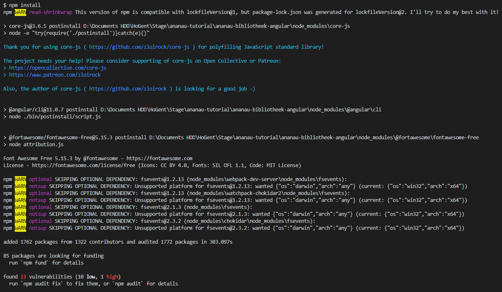Now, run the following command to see if our project builds. Don't worry about the backend for now... we just want to see if our project builds and runs.
DESKTOP /ananau-tutorial/ananau-bibliotheek-frontend
$ ng serve
It should compile without issues and should be live on your localhost. The login screen should look something like this:
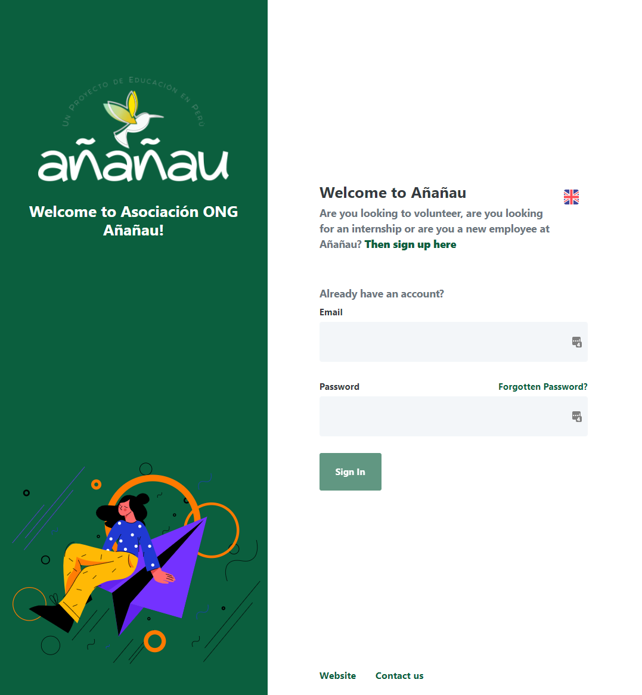The last step is installing some extensions for vscode to make our life (a lot) easier, not all of them are must-haves, the absolute necessary ones are labeled:
Don't worry about the Azure extensions for now, we need them when deploying our app.
Open the backend with VS 2019 (or later). Open the user-secrets and replace everything with the secret-value of ananau-secret-vs which can be found in the Azure Vault
Opening user-secrets:
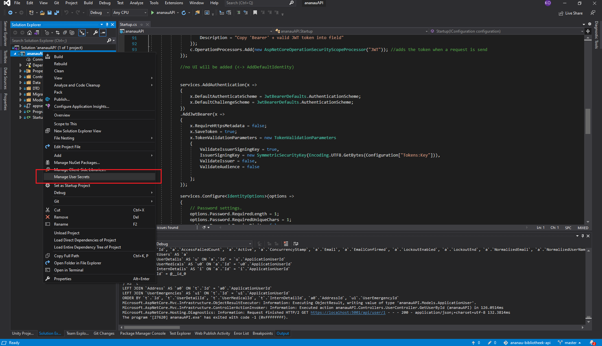After copy-pasting the content should look like this:
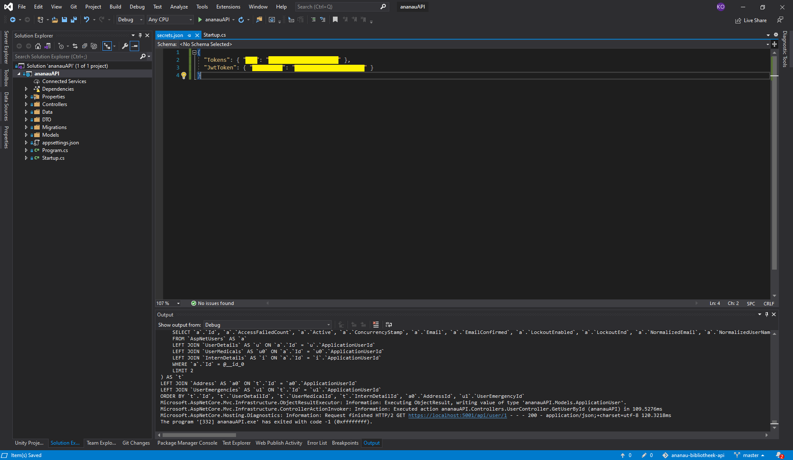We're almost there, we should be able to run our application now with the production database connected (look into appsettings.json, the connection strings should already be present). But if we try to run the app now we will get an error because Azure doesn't accept any connections outside the Azure environment. Simply put, we need to add our own IP Address to the 'trusted' ones within our Azure MySQL Server to connect.
So, head over to the Azure portal and click on the ananauserver MySQL Server resource, then navigate to Settings > Networking. Under Firewall rules there should be a button called + Add current client IP address, click on it and give it a sensible name. The result should look like this (with your IP added).
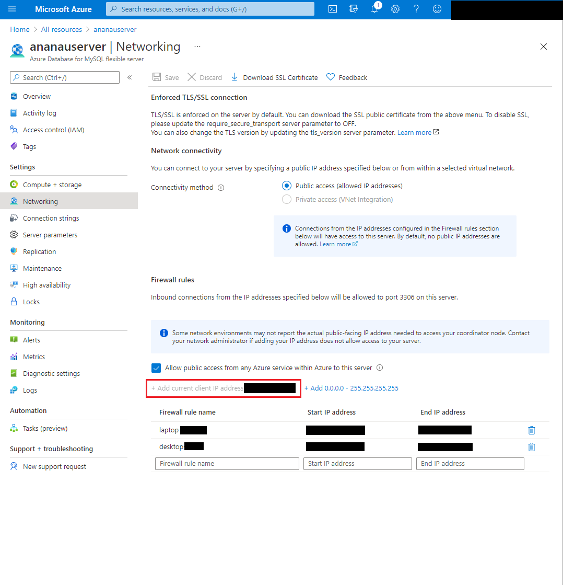Now, we should be able to run the app without any errors. Change the build option from ISS Express to AñañauAPI and run.
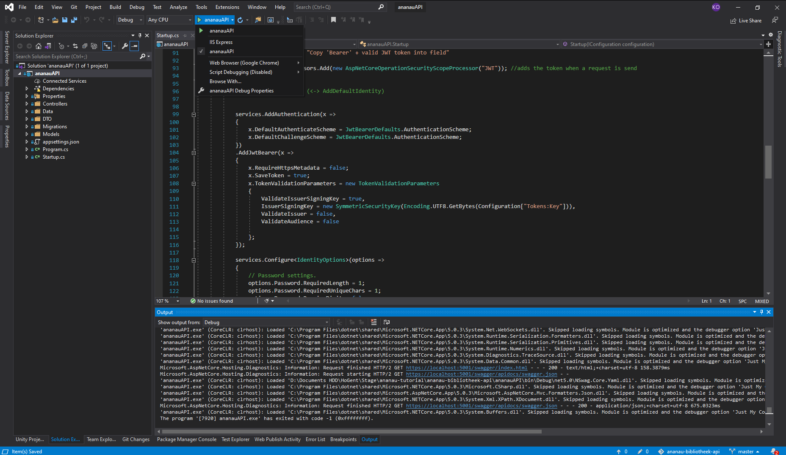If you followed all the steps, the backend should be up and running and the Swagger api documentation should automatically open. It should look like this:
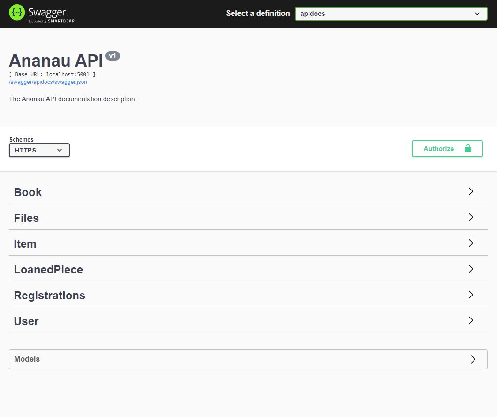The backend will run on port localhost:5001, by default the frontend you cloned is connected to this port. So if you run the frontend and the backend at the same time you should have a fully working development environment ready. There is a default IT account already registered: it@ananau.org (the password can be found on... you guessed it :) ). However, you should have made an account for yourself already...
Right now, you are running the apps locally but you are using the production (live) database on Azure! So please, be carefull to not mess things up. If you would like to use a local development DB, follow the next steps to quickly set one up.
It is always handy to have a connection ready to the live DB on Azure to see how things look and to quickly look up some data. We will connect to the MySQL DB on Azure using MySQL Workbench. If you have already installed MySQL Workbench you can start by opening it and click on the + button.
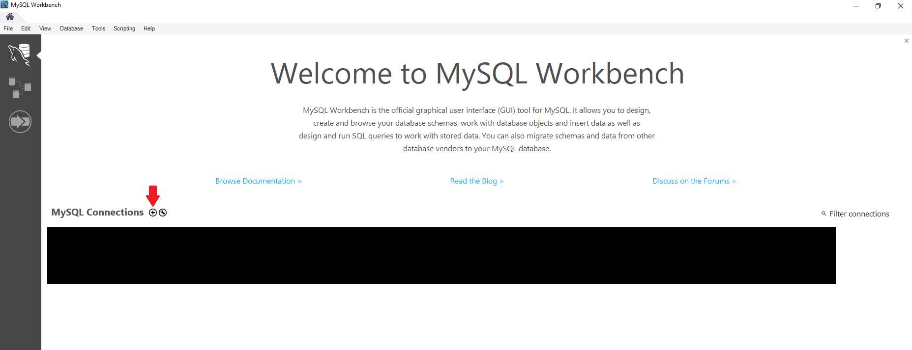You will be presented with a screen to set-up a new connection. Fill in the fields with the following information, leave the rest default.
Click on test connection to see if it works, if not, first double check the data you entered. Also make sure you added your IP Address to the 'trusted' listed like explained previously. If it still doesn't connect... Google and Azure Documentation.
If the test connection succeeds you will see a screen like this.
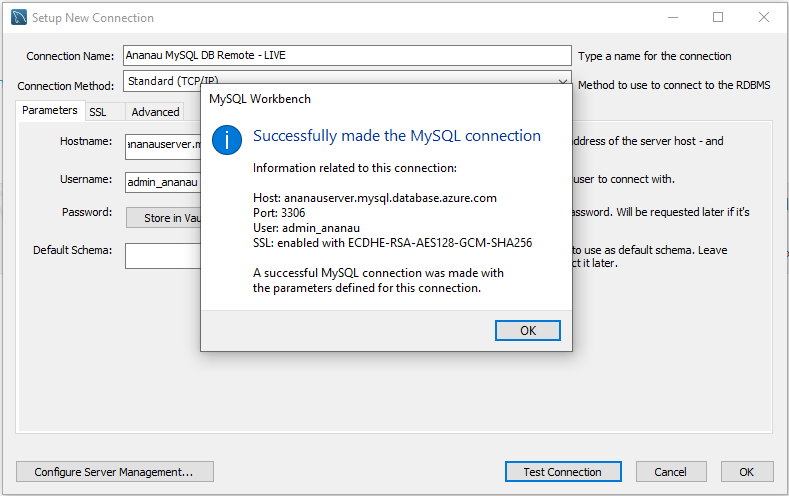Now you can click on the newly created connection and access the DB!
Creating a local DB can be done in a couple ways, we can create a DB from scratch (locally), apply our migrations and populate with dummy data. Or, we can go the easy way and create a local copy of our current production DB to work on. I prefer this option (ez one) because: we don't need to apply any migration and we have an up-to-date copy of our DB with all our data which means we can also login with our accounts (IT or personal).
First, make sure you created a local server when installing MySQL Workbench. If you didn't, you can create one following this guide.
The first step is to make a local copy of the Remote DB. Open MySQL Workbench and connect to the Remote DB we configured before. From the top menu click on Server > Data Export.
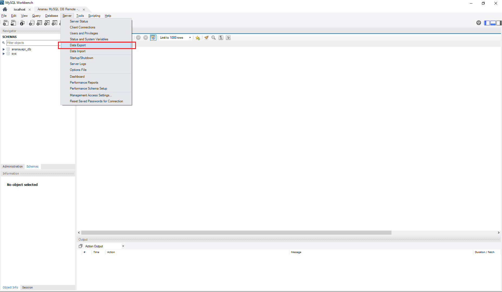You will be presented with a screen where you can choose a DB to backup and some options. Select the ananauapi_db, change the export options, select a folder and start export.
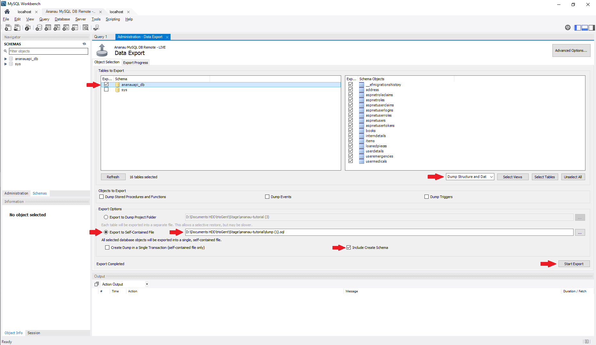Great! Now we have our up-to-date backup. The next step is to import it in our local server. Switch to your local server.
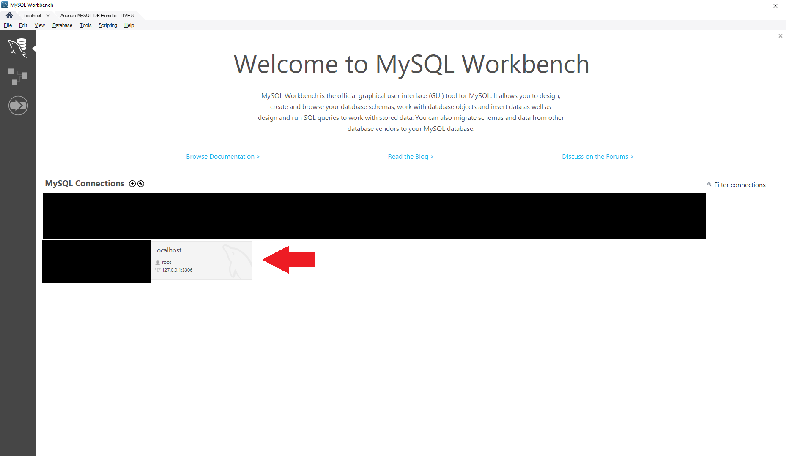Next, from the top menu click on Server > Data Import and fill in the fields like this. We don't have to create a new schema (DB), it will be auto generated for us.
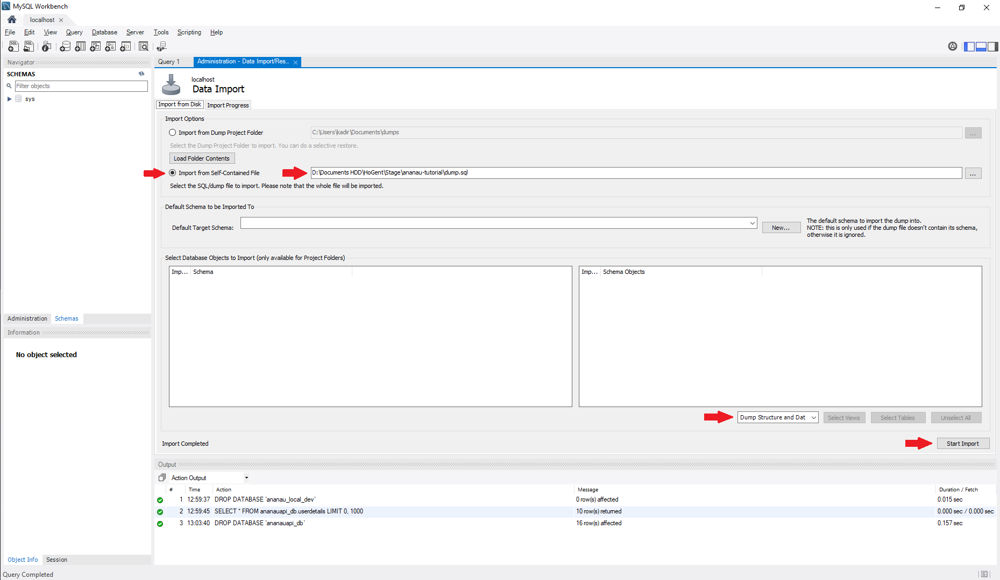Great! We now have our perfect copy